My Banana Fucko 以太坊区块链上的 2,000 张不请自来的香蕉图片和一些讨厌的超市香蕉，由称为 ass pocket 的 ERC-721 合约提供支持。屁股口袋是（理论上）永久的香蕉存储装置，由岛上一些最
MY BEAUTIFUL DARK TWlSTED FANTASY BY BEEBLE BEEBLE BLOCKS 的创世纪系列。该系列是对 BEEBLE 独特风格的视觉美学中的超凡脱俗的城市景观和黑暗幻想的探索，带有迷幻色彩的抽象数字绘画。标题，指的是 Kanye West 的一张旧
My Buddy by Sandra Jockus (Mind Jungle) 每天都会带来许多不同的情绪和感受，无论好坏。这是一个充满明亮多彩的 NFT 的集合，每个都讲述了一个人和动物的故事，包括各种情感的表达和一些有趣的信
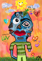 Mya Parker 1of1s Mya Parker 的 1/1s Erc-721 代币集合。没有实用程序只是 rad 艺术记录了 15 岁非裔美国人和女性 Mya Parker 或推特上的@myalparker 的经验😊✊🏾。 Mya Parker 1of1s NFT - 常见问题（F
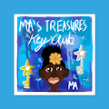 Myas Treasures (Silver Key Club Member) Myas Treasures（Silver Key Squad 成员）是手绘 NFT 收藏品，在 Mya Parker 的 Mya’s Collections 和 rad 艺术作品中具有第二大实用性。该系列将有 38 件商品，每件商品有 10 个版
MYBIAS(SWITH) MYBIAS 是第一个 K-POP 粉丝社区 DAO。在 MYBIAS 中，DAO 成员可以成为有前途的 K-POP 偶像的早期支持者。SWITHs，支持STACY的粉丝，是MYBIAS粉丝DA
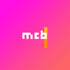 MyChibiBots 购买 CHIBIBOT 可让您免费访问即将推出的 MYCHIBIBOTS 游戏 MyChibiBots 是一个不断发展的 2048 个独特 ChibiBots 的集合，由邪恶的 AI 在技术奇点之后的遥远未来通过程序构建。它们可能是机器，但它
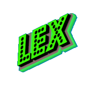 Official - LEX NFT by LexMetaCapital LexMetaCapital 的 Lex NFT 是一个生成的 10,000 个独角兽 NFT，在全球范围内充满爱心，以提高对我们管理的 $1B 组织的认识，并支持#freemint 趋势，我们现在更改了合同
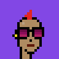 Polygon L2 Punks 第 2 层朋克都是唯一生成的 10,000 个 CryptoPunk NFT，存储在第 2 层（多边形）区块链上。 你现在可以铸造你的 L2 朋克了！L2 Punks NFT - 常见问题（FAQ） ▶ 什么是L2朋
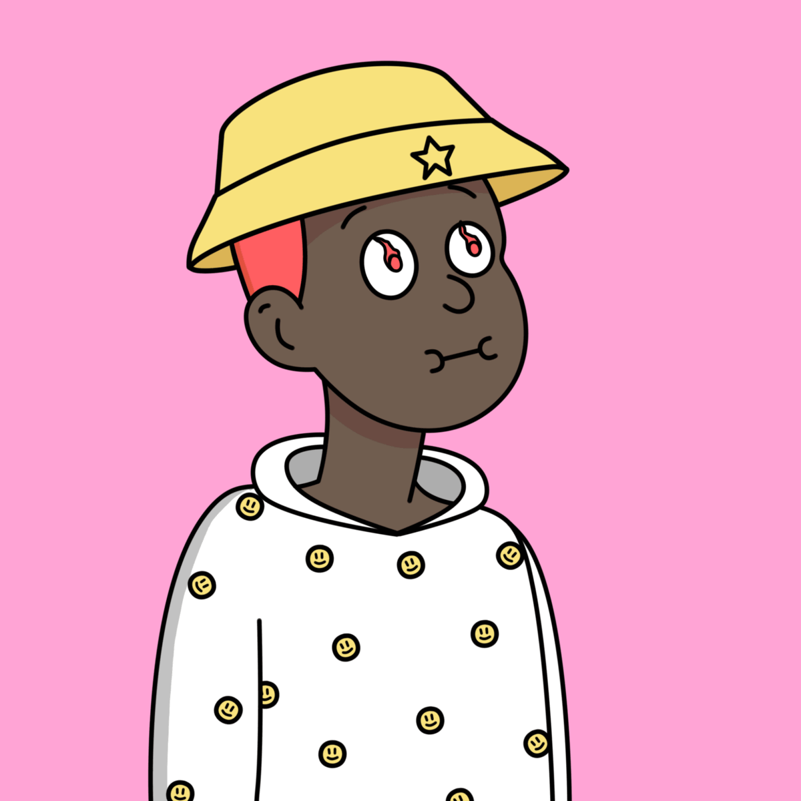 Possessed Boy LIW LABS 迷失在仙境 NFT 系列 || 他吃了一颗糖丸。 现在他迷失在仙境中，或者他只是迷路了……谁知道呢！ || Lost In Wonderland NFT NFT 在过去 7 天内售出 2 次。Lost In Wonderland NFT 的总
Potions (for Adventurers) 药水是随机生成并存储在链上的。 图像和其他功能被故意省略以供其他人解释。 随意以任何你想要的方式使用药水。 受 Loot 启发并兼容（适用于冒险家）。 我们正
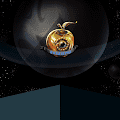 The Golden Orchard of Eris IlluminatiNFT 合集 | DAO 集体 | 网站 | DiscordMilo Algandros，厄里斯的园丁和果园的看守人，很高兴地宣布，经过千年的冬天，厄里斯的金色果园盛开了！ 所有愿意在树枝
The Liferz 2,500 张实验室门票。© 通过时尚和收藏品将 NFT 文化与现实世界联系起来。Liferz NFT - 常见问题（FAQ） ▶ 什么是 The Liferz？我们还有更多实验室门
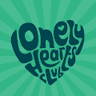 The Lonely Hearts Club 我是比特币万人迷#0002 我已经进入了我的所有者钱包 但是，我们通过各种赠品、竞赛和辛勤工作，将 WL 插槽赠送给我的 1893 颗孤独的心。 关注，参与 98% 的 NFT
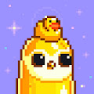 The Moon Penguins (Official) ▶ 什么是月球企鹅（官方）？ Moon Penguins (Official) 是一个 NFT (Non-fungible token) 集合。存储在区块链上的数字艺术品集合。 ▶ 月球企鹅（官方）代币有多少？ 总共有 767 个月球企鹅（官方）N
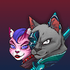 Yakuza Cats Society - The Killers Yakuza Cats Society - The Killers 是独一无二的随机生成的杀手猫，被招募来加强元宇宙的 Yakuza Cats 集团。 新兵不断被 Kobuns 发现，因为他们在城市中搜寻这些未被发现的主人。 这些杀手猫
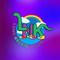 Zigazoo Genesis Drop: Long Neckie Kids by Nyla Hayes Zigazoo Genesis Drop：Nyla Hayes NFT 的 Long Neckie Kids 在过去 7 天内售出了 26 次。Nyla Hayes 的 Zigazoo Genesis Drop：Long Neckie Kids 的总销售额为 637.38 美元。Nyla Hayes NFT 的 Zigazoo Genesis Drop: Long Neckie
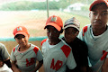 Aimos Editions - Hometeam 在家乡迷路时，我偶然发现了这些打棒球的孩子。 我看着他们练习并和球队一起闲逛了一会儿。 棒球在我的文化中是一件大事，许多年轻人作为职业运动员在大
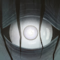 An Appealing Collection of Horrific Things 一个被遗忘的梦想的空间，在焦虑的心灵深处。 一个吸引人的可怕事物集合NFT - 常见问题（FAQ） ▶ 什么是吸引人的可怕事物集合？ 一个吸引人的可怕事
An Odd Little Place: The Digital Works of Jerry Garcia (1992-1995) Jerry Garcia 家族与 YellowHeart 合作，展示了“一个奇怪的小地方：Jerry Garcia 的数字作品（1992-1995）”NFT 收藏。作为一名跨越所有媒介的艺术家，Garc
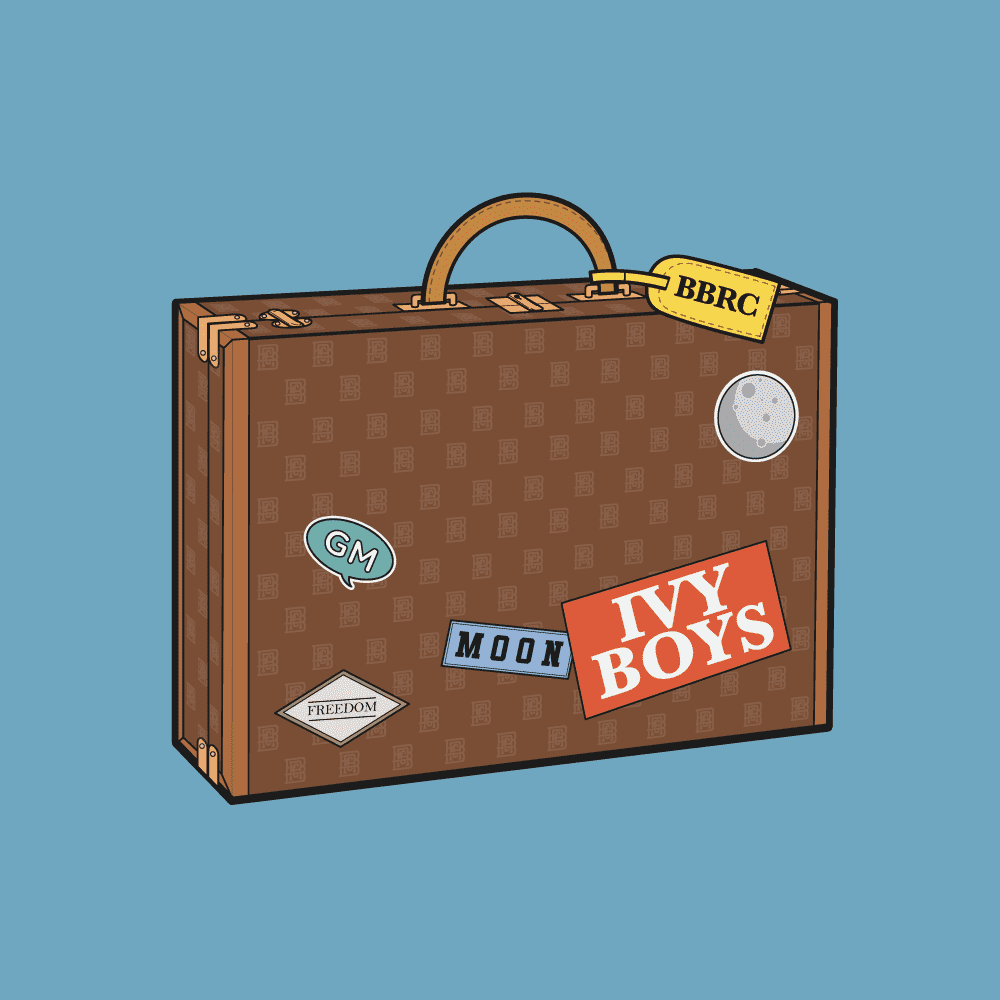 BBRC IVY TRUNK 2 那是什么！？第二个神秘后备箱揭开面纱！常春藤男孩和常春藤女孩，你的旅程才刚刚开始。在第 2 部分继续您的冒险，以解开 IVY BOYS 宇宙中的新秘密。BBRC
Bored Ape x Adidas Collab Snoop Dogg Bored Ape x ADlDAS Collab Snoop Dogg NFT - 常见问题（FAQ） ▶ 什么是 Bored Ape x ADlDAS Collab Snoop Dogg？ Bored Ape x ADlDAS Collab Snoop Dogg 是一个 NFT（非同质）系列。存储在区块链上的数字收藏品系列。
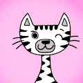 Cat Town Punks 欢迎来到猫镇朋克！喵！ 太空中少数将产生自己的硬币的 NFT 之一 - CatCoin 镇上有新的朋克。有 20,000 个唯一生成的 NFT。他们已经准备好接管世界。 尽管我对我的主人
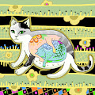 catist-free-drawings 从被人们遗弃和避开的流浪猫身上寻找新的美丽。 通过绘画看到看不见的东西。 cat+artist一个喜欢猫的 NFT 创作者 画你想要的一切！！ Catist 这是一个无
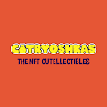 Catryoshkas 官方 Catryoshkas 系列 你一直在等待的可爱宝贝！Catryoshkas 是来美化区块链的 我们收藏的大部分将是这些可爱的猫。但这并不意味着它们很常见。没门！拥
Cats and Watches Society CAWS Cats and Watches Society (CAWS) 是由 DeFi Yield Protocol 开发的 10,000 个 NFT 的集合，DeFi Yield Protocol 是去中心化金融领域最有经验和创新的项目之一。在收养过程中，您的猫将配备一块很酷的豪华手表
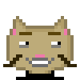 CatsOnChain (by PMD) CatsOnChain 是以太坊区块链上第一个 100% 链上生成的 GIF 集合。如果您查看当前的链上 NFT 项目，您会注意到其中大多数使用矢量图像（SVG）。我们还没有找到一个生成链
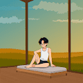 CatzCrewz NFT MUSIC ▶ 什么是 CatzCrewz NFT 音乐？ CatzCrewz NFT MUSIC 是一个 NFT（不可替代令牌）集合。存储在区块链上的数字艺术品集合。 ▶ 存在多少个 CatzCrewz NFT MUSIC 代币？ 总共有 33 个 CatzCrewz NFT MUSIC NFT。目
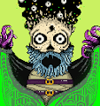 Cave Goblins 血清以一种全新的方式使洞穴地精发生了变异。 ▶ 什么是洞穴地精？Cave Goblins 是一个 NFT（非同质代币）集合。存储在区块链上的数字艺术品集合。 ▶ 洞穴
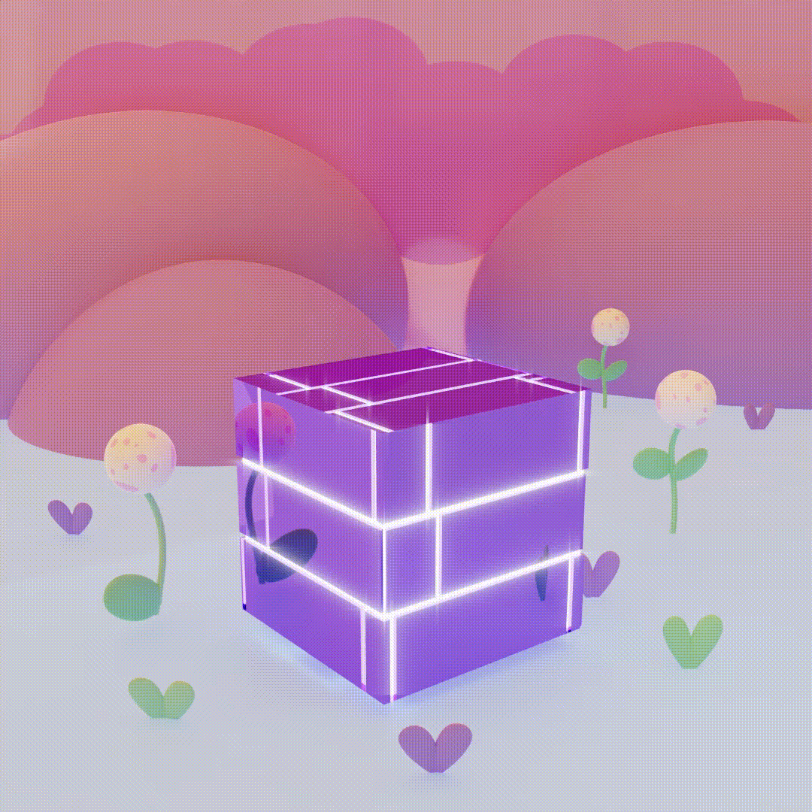 CB Official 颜色块是 2,999 个具有无限可能性的交互式块的创世集合。加入我们，成为未来的一部分！ ▶ 什么是 CB Official？ CB Official是一个 NFT (Non-fungible token) 集合。
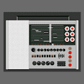 CB1000 向 Dieter Rams 和他标志性的 T1000 收音机致敬的生成艺术收藏品。每个 CB1000 都基于最初购买“已关闭”的 CB1000 的交易哈希。 CB1000 是一个生成艺术收藏品，向 Dieter Rams 和他标志性的 T1000 收
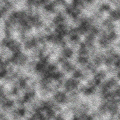 CC0 x ricky 一切都是混音，照顾病人很重要，客户要跟着他们，但同时他们也会受到一些巨大的痛苦和痛苦的影响。 ▶ 什么是 CC0 x ricky？ CC0 x ricky 是一个 NFT (Non-fungible token) 集合。
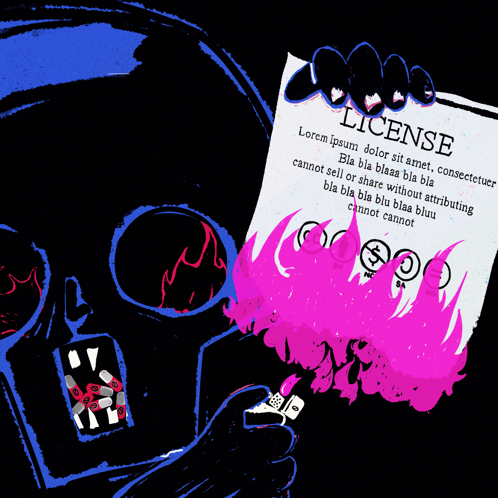 Celebrating CC0 为庆祝 XCOPY 的传奇 CC0 公告而创作的限量版艺术品！此系列的 100% 销售收入将用于购买 XCOPY 原件！ ▶ 什么是 Celebrating CC0？ Celebrating CC0 是一个 NFT（Non-fungible t
Celestial Mothers 通过支持、教育和治愈全世界的母亲和养育者来庆祝母亲的神圣角色。 创始人兼艺术家 Méora 由母亲主导的 NFT 项目。 Mothers of Eden 是一个 NFT 合集，包含 7,777 位母亲和
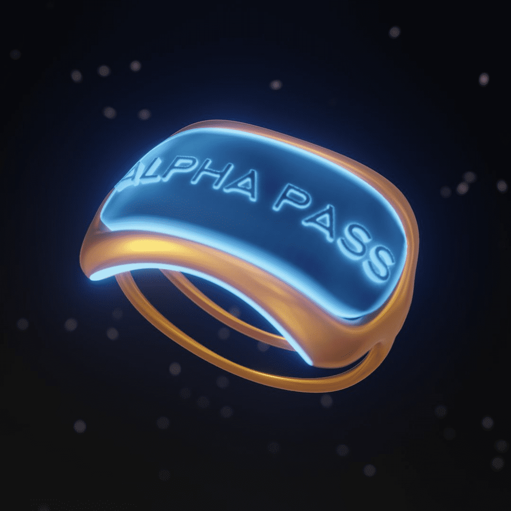 Celestial World: Alpha Pass Angels & Devils Alpha Pass NFT 是您进入我们虚拟世界的专属钥匙。Celestial World 是一个完全身临其境的 MMORPG 游戏体验。 从第 1 季的 4 个职业和 4 个职业中进行选择，探索
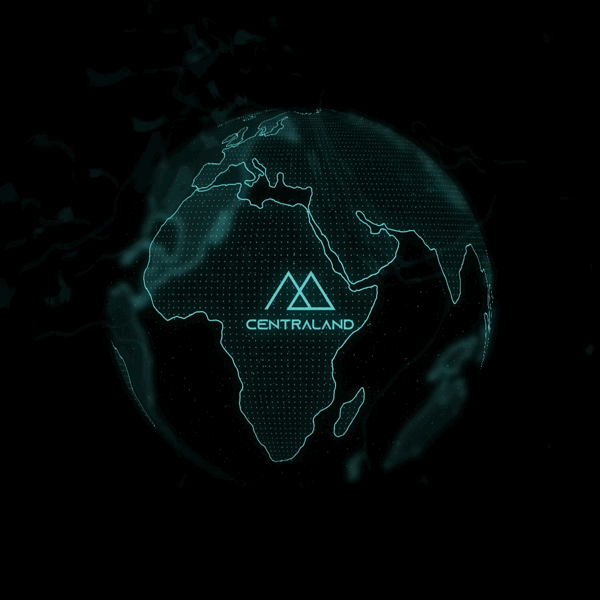 Centraland NFT 以太坊区块链上 333 个动画 Gen 1 Centraland 地块的集合。 每个 NFT 将授予持有者代表社区获得的新西兰 IRL 土地的分散所有权。Gen 1 持有者将解锁具有有形价值的独家福利
Century Social Club CSC 是 8,888 个 NFT 的集合。每个 NFT 都可以访问我们应用程序的产权！ CSC不仅仅是一个俱乐部，它是一个成为你命运主人的机会！在一个充满限制和边界的社会中，
Certificate of Inauthenticity 可证明不真实的稀有艺术版 - “气球狗”、“小便池”和“管道”。 忘记担心艺术品盗窃，您可以通过区块链的加密确定性证明这不是真实的东西。 为了明确链


 是由 DeFi Yield Protocol 开发的 10,000 个 NFT 的集合")